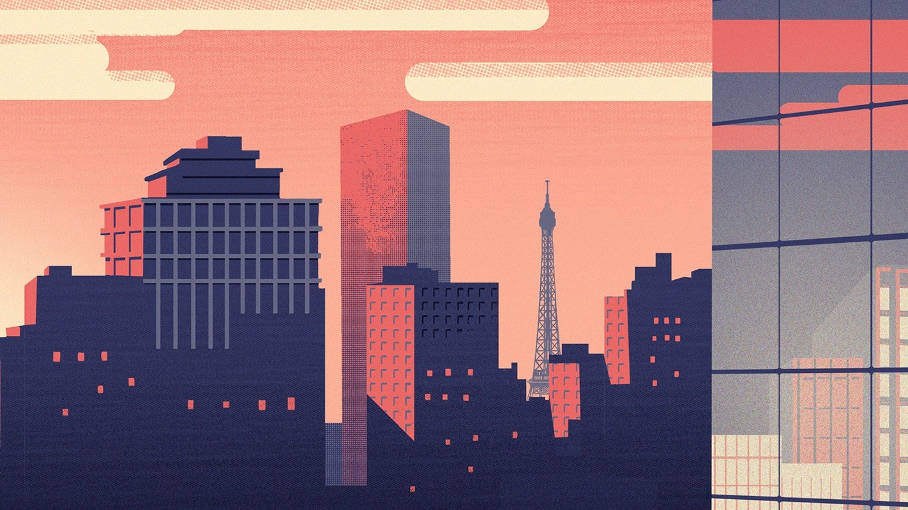

专注模式
前所未有的高效，就此拥有
25分钟
点击开始计时进入工作时间，请保持专注，灯光将会提示您工作时间的结束。
开始计时
放弃时段
25分钟
开始计时

常用设置
你的灯，属于你
色温/亮度
预设选择
阅读预设
温和色温，适于阅读与写作
自然光预设
完美还原自然光，真彩视界
儿童预设
去蓝光、无频闪
不使用预设
自己设定色温与亮度
闹钟
或许你会忘记，但我不会
7:35 AM 自然唤醒
模拟日出光线的变化，用自然的方式，自然的唤醒你
停用闹钟
删除闹钟
10:20 PM 常规提示
呼吸灯，灯，等灯等灯
停用闹钟
删除闹钟
添加闹钟
自然唤醒
标签
标签
时间
/ / : / /
确认添加
专注模式
前所未有的高效，就此拥有
专注模式
让前所未有的高效，就此拥有